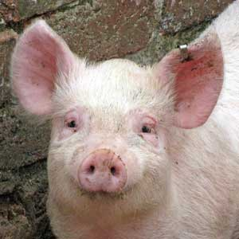

Świnka karolinka
To jest opowieść o prosiaczku z Marsa, który tam zamieszkał bo lubi batoniki
Czy naprawdę jest taka brzydka i gruba jak uważa Michał K. ?
Widzowie uważają, że nie.Świnki są super
Karo."najedź myszką"
IGNAŚ
ignas.karolina@gmail.com
Marcelego Mottego 3/8,Poznań
Aby świnia miała smaczek należy:
- Zadbać o jej świeżosć
- Dokładnie opalić i wyczyścić
- Posolić i wpierdalać :)
SMACZNEGO !

A jak zdobyć świnie ?
- w lesie
- w parku
- w chlewie
- w sklepie
POWODZENIA !
- przepis na herbate
- Wlać wodę do czajnika.
Następnie podgrzać na kuchence. Po podgrzaniu , wyciągnąć kubek , wsypać herbate i gotowe! Smaczego
FACEBOK
Witryny dotyczące świń
- MIESIĘCZNIK DZIKIE ŻYCIE
- WIKIPEDIA